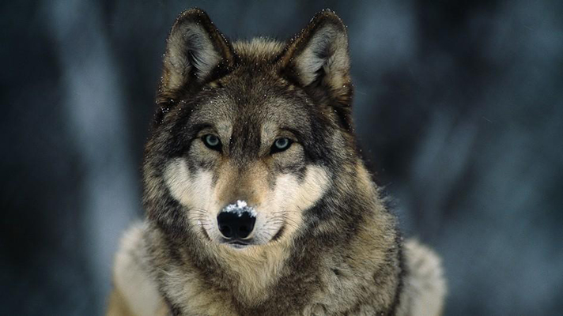

About Wolves
The gray wolf or grey wolf (Canis lupus[a]) also known as the timber wolf,[3][4] or western wolf,[b] is a canid native to the wilderness and remote areas of North America and Eurasia. It is the largest extant member of its family, with males averaging 43–45 kg (95–99 lb), and females 36–38.5 kg (79–85 lb).[6] Like the red wolf, it is distinguished from other Canis species by its larger size and less pointed features, particularly on the ears and muzzle.[7] Its winter fur is long and bushy, and predominantly a mottled gray in color, although nearly pure white, red, or brown to black also occur.[4] As of 2005,[8] 37 subspecies of C. lupus are recognised by MSW3. The nominate subspecies is the Eurasian wolf (Canis lupus lupus),[9] also known as the common wolf.[10]
The gray wolf is the second most specialised member of the genus Canis, after the Ethiopian wolf, as demonstrated by its morphological adaptations to hunting large prey, its more gregarious nature,[11] and its highly advanced expressive behavior.[12][13] It is nonetheless closely related enough to smaller Canis species, such as the eastern wolf,[5] coyote[14] and golden jackal[15][16] to produce fertile hybrids. Its closest relative is the domestic dog, with which it shared a common European ancestor which likely diverged 40,000 years ago.[17] It is the only species of Canis to have a range encompassing both the Old and New Worlds,[5] and originated in Eurasia during the Pleistocene, colonizing North America on at least three separate occasions during the Rancholabrean.[5]